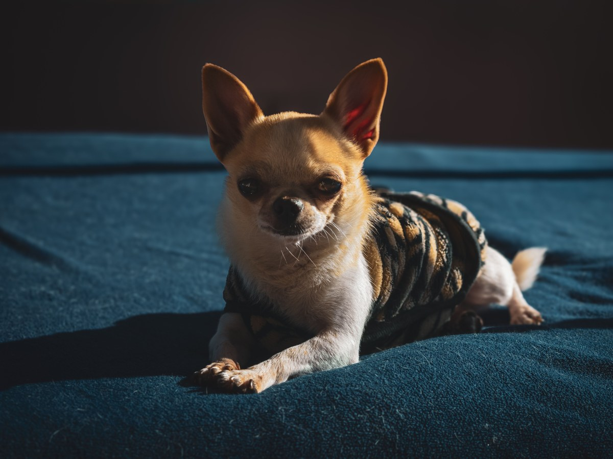
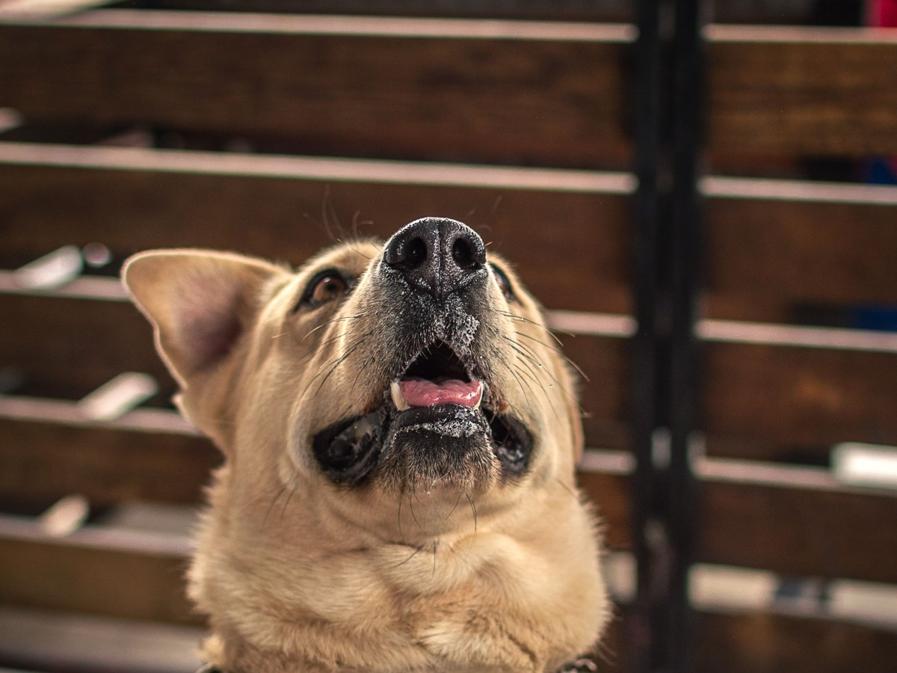
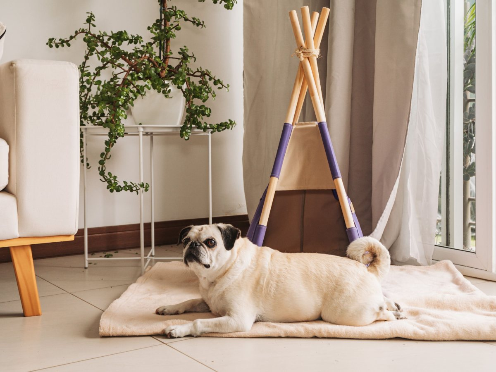
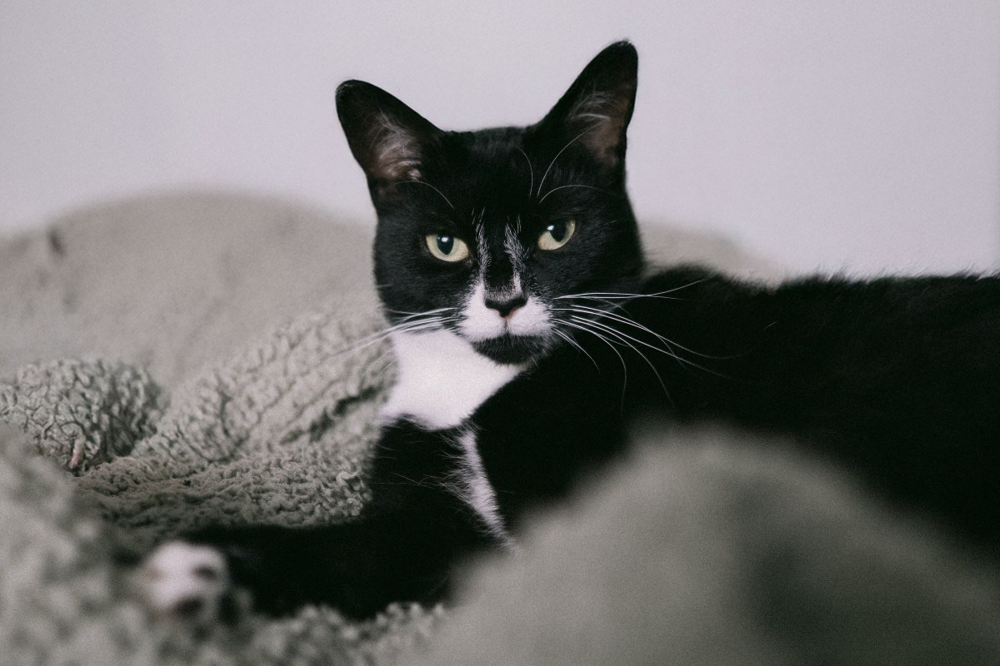
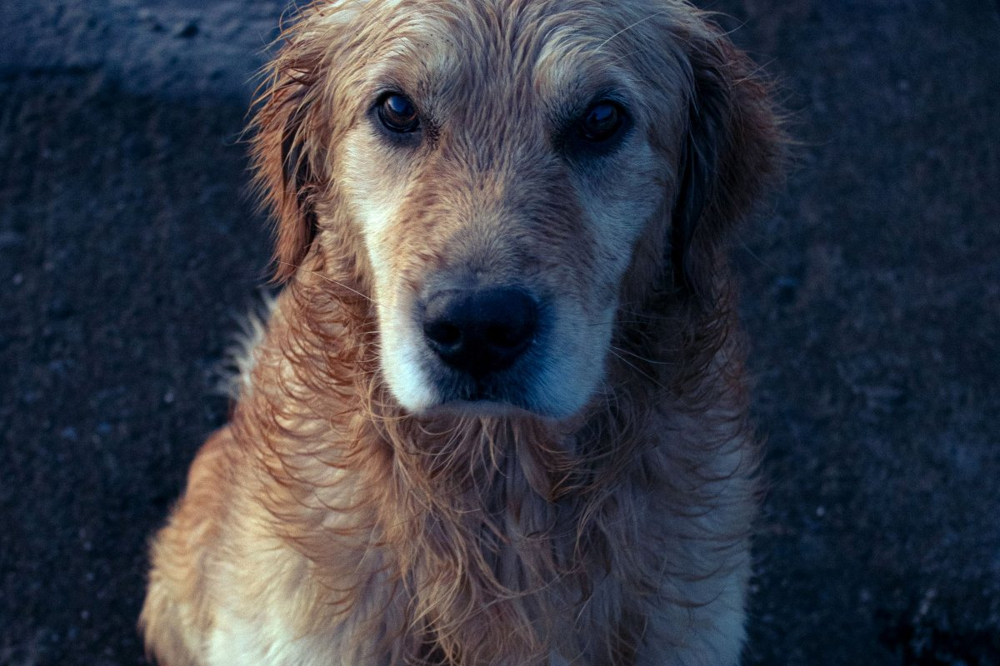
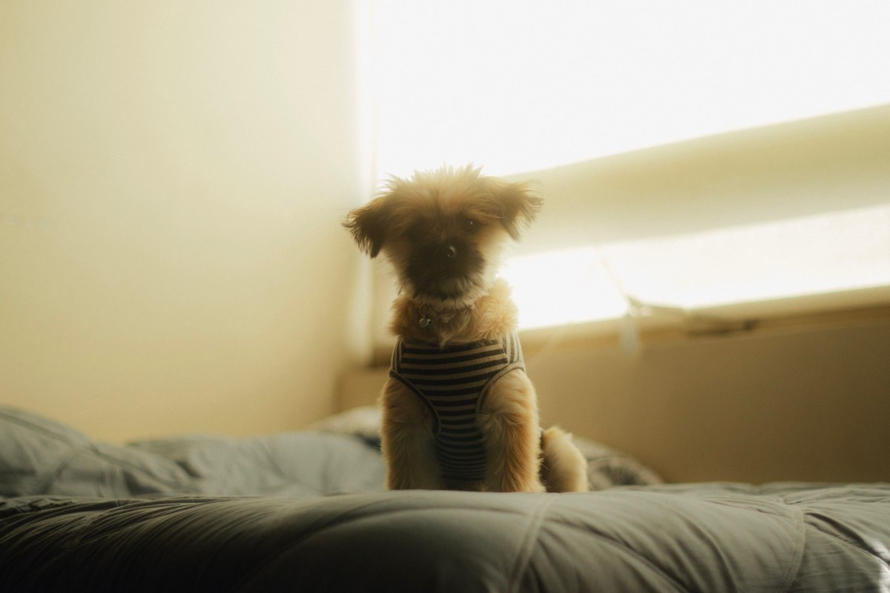
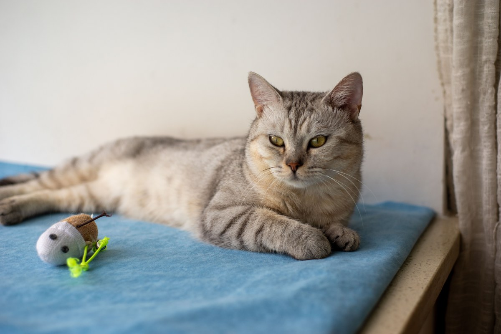

Hospital veterinario · Temuco
De noche, no queda solo.
Qué pasa entre que usted se va y vuelve a buscarlo.
- 572reseñas en Google
- 4,3de nota
- 24 hurgencias, según su agenda
- 0páginas propias: todo está en redes
Lo que más angustia y menos se explica
Mientras se queda
Seis momentos, desde que usted se va hasta que vuelve a buscarlo.
-
Al llegar
Ingreso y examen
Peso, signos vitales y ficha.
-

Primeras horas
Estabilizar
Suero y analgesia. Antes de operar, lo llamamos.
-

Durante el día
Controles por horario
Si comió, tomó agua y orinó.
-

Visitas
Puede verlo
Verlo a usted mejora cómo come.
-
De noche
No queda solo
Si algo cambia, llamamos a la hora que sea.
-

El alta
Instrucciones escritas
Qué remedio, a qué hora y cuándo volver.
Cómo funciona de verdad la hospitalización lo confirma la clínica.
Si es ahora, es por teléfono.
En el mismo edificio
Lo que hace la clínica
Urgencias
Golpes, intoxicaciones y partos complicados.
Cirugía
Esterilizaciones y cirugía general.
Hospitalización
Con controles por horario.
Vacunas
Y desparasitación al día.
Dermatología
Picazón, caída de pelo, heridas.
A domicilio
Consultas en la casa.
Los confirma la clínica.
Se va con instrucciones en papel, no de memoria.
El alta
En recuperación
Perros y gatos, de vuelta a casa




Fotos de referencia: las de la clínica las pone la clínica.
Dónde estamos
O'Higgins 01158, Temuco
- Dirección
- Bernardo O'Higgins 01158
- Teléfono
- 45 224 4535
- Agenda (AgendaPro)
- Lunes a sábado, 10 a 14
- Urgencias
- 24 horas, según su agenda
Si es urgencia, llame antes de salir: se prepara el box.
Bernardo O'Higgins 01158, Temuco Abrir en Google Maps
Para el dueño
Qué es real y qué falta
Lo verificado
El nombre, la dirección, el teléfono, las 572 reseñas con 4,3 y lo que publica su AgendaPro.
Lo de ejemplo
Los seis momentos de la hospitalización y el detalle de los servicios.
Lo que falta
El horario de atención completo y las fotos de la clínica y del equipo.